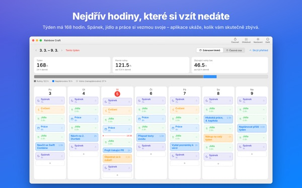
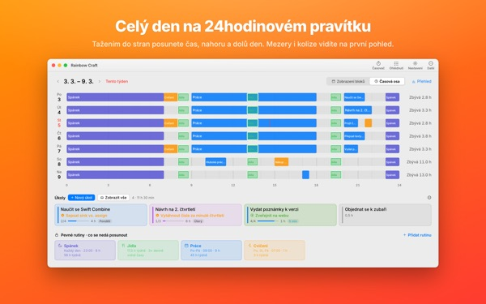
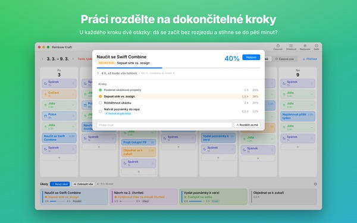
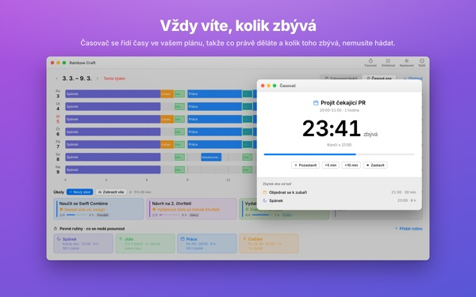
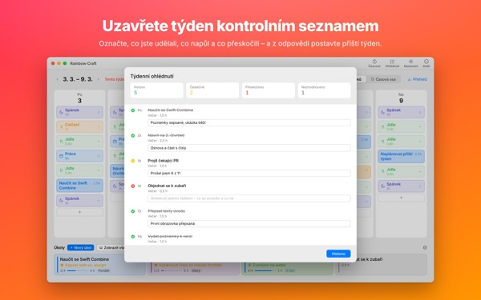

Vejde se to všechno
opravdu do tohohle týdne?
Rainbow Craft rozloží váš týden na Macu po dnech a hodinách. Začněte časem, kterého se nevzdáte, jako je spánek, jídlo a práce, přetáhněte úkoly do zbylých mezer a uvidíte, co se skutečně vejde.
Plánování, rutiny, úkoly, ohlédnutí, časovač a import kalendáře jsou zdarma.

Naplánujte týden tady
Připravili jsme čtyři rutiny, které aplikace navrhne při prvním spuštění. Zapínejte je a vypínejte a pokládejte úkoly na dny.
Seznam roste. Týden ne.
Seznam úkolů vám neřekne, jestli ho váš týden unese. Když si spánek, jídlo a dojíždění vezmou své, zbývá méně, než si myslíte. Rainbow Craft ty hodiny ukáže v číslech a políčkách a nechá vás každý úkol vyzkoušet na skutečném místě.
Den na 24hodinovém pravítku
Časová osa rozloží den na pravítko o 24 hodinách. Mezery a překryvy jsou vidět hned a vy volíte, jak se překrývající věci uspořádají.
Schůzky a události si stáhnete z Kalendáře na Macu, místo abyste je psali dvakrát. Pokud chcete, plány se mohou zapisovat i do samostatného kalendáře Rainbow Craft, který uvidíte na iPhonu. Ostatní kalendáře se nikdy nemění.

Rozdělte velké úkoly na kroky, které skončí
Velké úkoly váznou, když něco ještě stojí v cestě. Aplikace se u každého kroku ptá na dvě věci: Můžete začít bez rozjezdu? Zvládnete ho za pět minut?
Co splní obojí, je drobek na každých volných pět minut. Zbytek potřebuje vyhrazený čas. Když se aplikace splete, rozhodnete vy.

Na čem právě jste a kolik zbývá
V čase začátku se plán přepne na probíhající, a když čas vyprší, aplikace se zeptá, jestli jste hotovi. Časovač jde podle vašeho rozvrhu.
Widget Časovač Teď ukáže aktuální úkol a zbývající čas, aniž byste aplikaci otvírali.

Uzavřete týden kontrolním seznamem
Týdenní ohlédnutí je jedna karta na den. Označte, co je hotové, napůl hotové nebo přeskočené, a použijte to při plánování dalšího týdne.
Na stejném účtu iCloud putují úkoly mezi touto aplikací a Rainbow of Desire na iPhonu, takže den naplánovaný na Macu máte s sebou i venku.

Začít jde ve třech krocích
- 1
Zadejte pevné hodiny
Co se každý týden opakuje, jako spánek, jídlo a práce, nastavte jako rutiny. Aplikace za vás nic nevyplní.
- 2
Sepište úkoly
Jeden na řádek v části Úkoly dole. Kdy je uděláte, zatím vědět nemusíte.
- 3
Přetáhněte je na dny
Úkol puštěný na den se stane plánem. Posunulo se datum? Přetáhněte ho na jiný den nebo zpět do seznamu.
Počty s navrženými rutinami
- Týden
- 168 hodin
- Spánek · 8 hodin denně
- 56 hodin
- Jídla · třikrát denně
- 17,5 hodiny
- Práce · škola · 9 hodin v pracovní dny
- 45 hodin
- Cvičení · 1 hodina po, st, pá
- 3 hodiny
- Čas, který tento týden opravdu máte
- 46,5 hodiny
Jsou to jen návrhy. Vyberte a upravte rutiny podle svého života. O dovolené nebo na cestách odeberte práci jen z toho jednoho dne.
Vše, co potřebujete pro tento týden, je zdarma
Zdarma
- Týdenní a denní plány, rutiny a úkoly bez omezení
- Časová osa a dělení na kroky
- Týdenní ohlédnutí, které jde zkopírovat i jako text
- Časovač a widget Časovač Teď
- Import kalendáře
- Synchronizace s Rainbow of Desire na iPhonu
- Trendy za poslední 2 týdny
Plus · Pro
- Plus: trendy za 8 týdnů, vaše nejlepší dny a hodiny
- Plus: plán a skutečnost vedle sebe
- Plus: přenést plán vydařeného týdne najednou do tohoto týdne
- Pro: vše z Plus a sdílení rozvrhu odkazem jen pro čtení
- Pro: jeden nákup odemkne Pro i v aplikaci pro iPhone
Každá úroveň jako roční předplatné nebo jednorázový nákup navždy
Ceny najdete v aplikaci a v App Storu. Roční předplatné se automaticky obnoví, pokud ho nezrušíte nejpozději 24 hodin před koncem období. Pro koupené na iPhonu platí i na Macu se stejným účtem iCloud.
Časté dotazy
Musím být přihlášený k iCloudu?
Ne, pokud aplikaci používáte jen na Macu. iCloud je potřeba k synchronizaci s iPhonem a ke sdílení rozvrhu.
Mění aplikace mé kalendáře?
Nikdy ty, které už máte. Import jen čte kalendáře, které vyberete. Když zapnete zápis plánů do kalendáře Rainbow Craft, aplikace vytvoří tento samostatný kalendář a píše jen do něj. Kdykoli ho můžete smazat v aplikaci Kalendář.
Úkoly z Macu se na iPhonu neobjevují.
Zkontrolujte, že obě zařízení používají stejný účet iCloud a že je na iPhonu nainstalovaná Rainbow of Desire. Synchronizace jde přes iCloud a může trvat pár minut.
Zavře se aplikace se zavřením okna?
Ne. Aplikace dál běží. Okno znovu otevřete z nabídky Okno nebo kliknutím na ikonu v Docku.
Co se při aktualizaci stane s mými úkoly a plány?
Zůstanou přesně tak, jak jsou. Aktualizace nic z toho, co jste napsali, nemění ani nemaže.
Jak změním jazyk aplikace?
Vyberte ho úplně nahoře v Nastavení v položce Language · 언어 · 語言 a aplikace se znovu otevře v tomto jazyce. Jazyků je 23. Názvy rutin a úkoly, které jste napsali sami, se nepřekládají.
Nový Mac a Plus nebo Pro zmizelo.
Přihlaste se stejným Účtem Apple a v Nastavení klikněte na Obnovit nákup. Zrušit můžete v nastavení účtu v App Storu.
Kam se ukládá to, co píšu?
Žádný účet, žádná registrace a žádný server vývojáře s vašimi plány. Co napíšete, zůstává na vašich zařízeních a ve vašem iCloudu. Aplikace posílá anonymní statistiky používání bez vašeho obsahu a vypnete je v Nastavení volbou Odesílat anonymní statistiky používání.
Zasekli jste se nebo něco nesedí? Napište na mizzking75@gmail.com. Kontakt najdete i v nastavení aplikace.